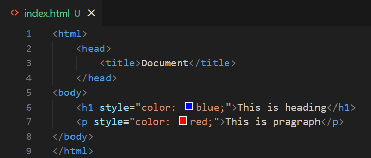
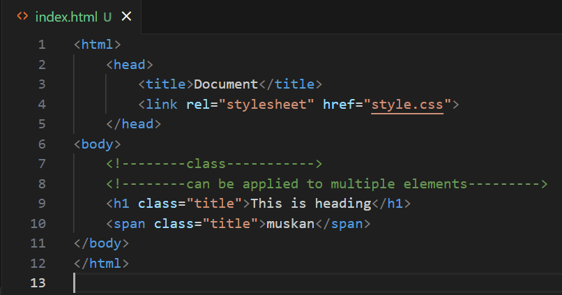

1. What is CSS?
Ans. CSS (Cascading Style Sheets) is a language used to style and layout web pages. It controls the design, colors, fonts, and spacing of HTML elements.
or
Ans. CSS is a stylesheet language that allows you to apply styles to web pages, making them visually appealing and user-friendly.
or
Ans. CSS is used to separate content (HTML) from presentation, enabling developers to design consistent and responsive web pages efficiently.
2.What are the different types of CSS? (Inline, Internal, External)
Ans. There are three types of CSS:
- Inline CSS: Applied directly to an HTML element using the
styleattribute.Example Image:

- Internal CSS: Defined within a
<style>tag in the<head>section of the HTML document.Example Image:

- External CSS: Written in a separate file with a
.cssextension and linked to the HTML document using a<link>tag.Example Image:

3.What is the syntax of CSS?
Ans. The syntax of CSS consists of a selector and a declaration block. The selector targets the HTML element(s) to style, and the declaration block contains one or more declarations separated by semicolons. Each declaration includes a property and a value, separated by a colon.
/* Example */
selector {
property: value;
property: value;
}
4.What is the difference between classes and IDs in CSS?
Ans. Classes and IDs are both used to target HTML elements for styling, but they have key differences:
- Classes:
- Defined using a period (
.) followed by the class name. - Can be applied to multiple elements on a page.
- Used for reusable styles.
- Example:
.example-class { color: red; }
- Defined using a period (
- IDs:
- Defined using a hash (
#) followed by the ID name. - Must be unique and applied to only one element on a page.
- Used for specific, unique styles.
- Example:
#example-id { font-size: 20px; }
- Defined using a hash (


5.What is the difference between relative, absolute, fixed, and sticky positioning?
Ans. The differences between relative, absolute, fixed, and sticky positioning are as follows:
- Relative: The element is positioned relative to its normal position. You can use
top,right,bottom, andleftproperties to adjust its position. - Absolute: The element is positioned relative to its nearest positioned ancestor (an ancestor with a position other than
static). If no such ancestor exists, it is positioned relative to the initial containing block (usually thehtmlelement). - Fixed: The element is positioned relative to the viewport and does not move when the page is scrolled. It remains fixed in place.
- Sticky: The element toggles between relative and fixed positioning depending on the scroll position. It is treated as relative until a specified scroll threshold is reached, after which it becomes fixed.